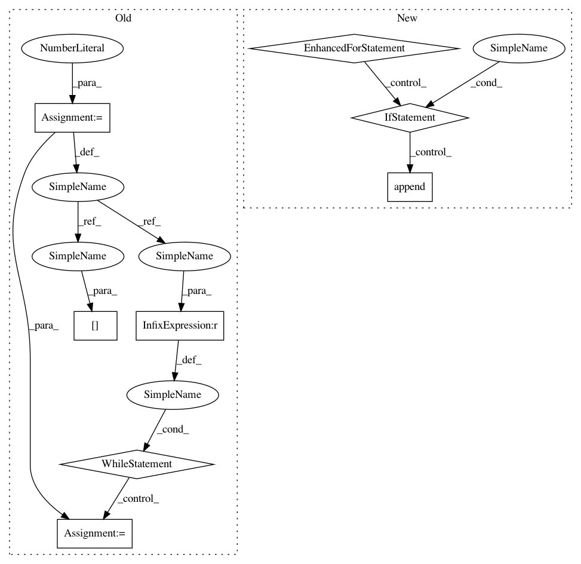

e24625095a33a5c9a2d016018203938e9bb2ccbf,keras/backend/cntk_backend.py,,rnn,#Any#Any#Any#Any#Any#Any#Any#Any#,1308
Before Change
j = 0
while j < len(constants):
if isinstance(constants[j], list):
i = 0
while i < len(constants[j]):
if _get_dynamic_axis_num(constants[j][i]) == 1:
constants[j][i] = C.sequence.broadcast_as(constants[j][i], inputs)
i += 1
else:
if _get_dynamic_axis_num(constants[j]) == 1:
constants[j] = C.sequence.broadcast_as(constants[j], inputs)
j += 1
After Change
for constant in constants:
if isinstance(constant, list):
new_c = []
for c in constant:
if _get_dynamic_axis_num(c) == 1:
new_c.append(C.sequence.broadcast_as(c, rnn_inputs))
else:
new_c.append(c)
rnn_constants.append(new_c)
else:
if _get_dynamic_axis_num(constant) == 1:
rnn_constants.append(C.sequence.broadcast_as(constant, rnn_inputs))
In pattern: SUPERPATTERN
Frequency: 3
Non-data size: 8
Instances
Project Name: keras-team/keras
Commit Name: e24625095a33a5c9a2d016018203938e9bb2ccbf
Time: 2018-04-14
Author: nisargjhaveri@users.noreply.github.com
File Name: keras/backend/cntk_backend.py
Class Name:
Method Name: rnn
Project Name: neuropsychology/NeuroKit.py
Commit Name: 2b95b22862cc3055737159c8e36f2bb6cb120fe8
Time: 2017-01-03
Author: dom.mak19@gmail.com
File Name: neurokit/miscellaneous/miscellaneous.py
Class Name:
Method Name: find_following_duplicates
Project Name: PyThaiNLP/pythainlp
Commit Name: 0eb1299cfe37df81f11ed47f9f61499d4f4244ed
Time: 2018-11-02
Author: arthit@gmail.com
File Name: pythainlp/ner/locations.py
Class Name:
Method Name: tag_provinces
Project Name: keras-team/keras
Commit Name: e24625095a33a5c9a2d016018203938e9bb2ccbf
Time: 2018-04-14
Author: nisargjhaveri@users.noreply.github.com
File Name: keras/backend/cntk_backend.py
Class Name:
Method Name: rnn